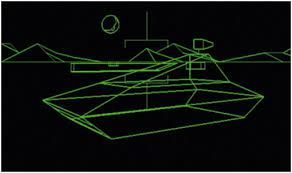

HISTORY OF VIDEO GAMES
Video games are a relatively new concept. Video games have only been around for 63 years but they have a $151.06 billion market size. As many people know video games started out very simple such as games like pong. Some might say pong is the first ever video game and they are close. The first ever video game was tennis for 2 (gif down bellow).

Besides tennis for 2 some of the first video games such as pong came in a cabinet. These games are known as arcade games. Because the cabinets had a good amount of room they could power more complicated games such as Donkey Kong.
As technology became more advanced and they could shrink it down they started to make home consoles. Some examples of early home consoles are the Odyssey, the NES, and the Sega Master System.
Besides consoles and computers games also advanced into the 3rd dimension. Many might say that wolfenstein 3d was the first video game but they would be wrong. The first 3d game was battlezone. Battlezone had vector (basically just lines) 3d graphics.
In modern times with all of our resources it is quite easy to make games. I have actually made a game you can play below. Use the arrow keys to move. You can double jump by holding or pressing the up button 2.